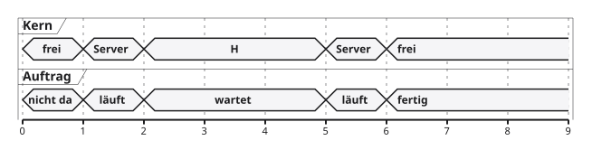
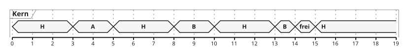
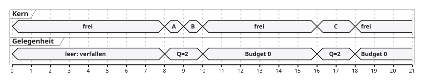
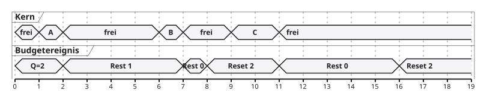
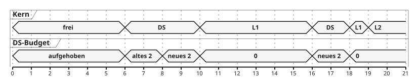
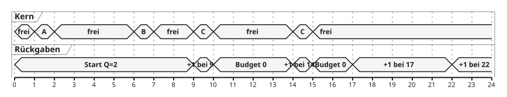

08 · Ereignisse mit Rechenzeit versorgen
- Server-Verfahren für aperiodische Arbeit
- Background, Polling, Deferrable und Sporadic Server
- Budgets lesen, Zeitachsen zeichnen, Fristen prüfen
- Papierklausur und vorbereiteter FreeRTOS-Modellversuch
Vorwissen wird zur neuen Frage
| Rechenbedarf und Antwortzeit |
Budgetverbrauch richtig zählen |
| Feste Prioritäten und Fristnachweis |
Server neben Regler einplanen |
| Threads und Queues |
Aufträge sammeln und bedienen |
| Multicore und Timing-Analyse |
Modellgrenzen und Zeitbasis benennen |
Fünf überprüfbare Lernziele
- Auftrag, Serverbudget und Priorität auseinanderhalten
- Vier Bedienverfahren an einer Zeitachse vergleichen
- Beim Sporadic Server Rückgaben nachvollziehbar führen
- Polling mit Antwortzeitanalyse einplanen
- Fristen, Überlast und Implementierungsgrenzen begründen
180 Minuten: verstehen, rechnen, beobachten
| Modell, Background und Polling |
35 |
| Deferrable und Sporadic Server |
35 |
| Fristnachweis, Überlast und Umsetzung |
20 |
| Vier Papieraufgaben mit Besprechung |
50 |
| Vorbereiteter Modellversuch auf dem Board |
25 |
| Quiz und gemeinsame Klärung |
15 |
| Gesamt |
180 |
Der Regler bekommt unregelmäßige Nachbarn
- Regler: regelmäßig freigegeben, eigene harte Frist
- Bedienkommando: trifft bei einer Benutzereingabe ein
- Diagnose: kann mehrere Aufträge hintereinander liefern
- Ein Kern: alle benötigen dieselbe Prozessorzeit
Welche Ereignisarbeit darf den Regler wie lange verdrängen?
Aperiodischer Auftrag und sporadische Task
| Periodisch |
regelmäßiger Abstand |
| Sporadisch |
mindestens ein festgelegter Abstand |
| Aperiodisch |
kein zugesicherter Mindestabstand |
Der Name Sporadic Server legt den Eingabeabstand nicht fest.
Drei getrennte Größen: Queue, Budget, Rang
| Auftragsqueue |
Welche Arbeit wartet noch? |
| Restbudget \(b\) |
Wie viel eigene CPU-Zeit ist erlaubt? |
| Serverpriorität |
Wer läuft bei Konkurrenz zuerst? |
Innerhalb des Servers heute: FIFO, ältester Auftrag zuerst.
Kapazität und Zeitraum: \(Q\) und \(T\)
- \(Q\): zugeordnete Kapazität in CPU-Millisekunden
- \(T\): Zeitraum der jeweiligen Serverregel
- \(b\): aktuell verfügbares Restbudget, \(0\leq b\leq Q\)
- Beispiel: \(Q=2\,\mathrm{ms}\), \(T=8\,\mathrm{ms}\)
\[U_S=\frac{Q}{T}=\frac{2}{8}=25\,\%\]
Budget zählt eigene CPU-Zeit
Lehrmodell · Zeit in ms · fremde Arbeit ist keine Serverarbeit

\[C=(2-1)+(6-5)=2\,\mathrm{ms},\qquad R=6-1=5\,\mathrm{ms}\]
Wann darf ein budgetierter Server laufen?
- Mindestens ein Auftrag ist unbearbeitet.
- Restbudget \(b>0\) ist verfügbar.
- Keine höher priorisierte bereite Aufgabe verdrängt ihn.
| Queue leer, Budget vorhanden |
keine Serverarbeit |
| Queue gefüllt, Budget null |
auf Auffüllung warten |
Ein gemeinsames, vollständig bestimmtes Modell
Ein Kern · keine Höherstörer · FIFO · Verwaltungskosten null.
Alle Zeiten in ms · \(Q=2\), \(T=8\) · Anfangsbudget 2.
Background: Arbeit im Hintergrund
- Aperiodische Aufträge erhalten niedrigste Priorität.
- Sie laufen, wenn vorrangige Arbeit nicht bereit ist.
- Kein reserviertes \(Q/T\), keine Auffüllliste.
- Viel freie Zeit hilft; dauernde Vordergrundlast kann sie verdrängen.
Background nutzt Lücken der Vordergrundarbeit
Neues Lehrbeispiel · Vordergrund H: \(C_H=3\), \(T_H=5\) ms

A: \(r=1\), \(C=2\), Ende 5 · B: \(r=4\), \(C=3\), Ende 14.
Polling Server: feste Bediengelegenheiten
- Alle \(T\) beginnt eine Bediengelegenheit mit Budget \(Q\).
- Ist die Queue dabei leer, verfällt diese Gelegenheit.
- Wird sie später leer, verfällt das Restbudget.
- Bei Budget null: bis zur nächsten Gelegenheit warten.
Warten auf einen Höherstörer verbraucht keine eigene CPU-Zeit.
Polling verpasst den Auftrag kurz nach null
Gemeinsames Modell: \(Q=2\), \(T=8\), A bei 1, B bei 6.
| 0 |
leer |
Budget verfällt |
| 1 |
A kommt |
wartet bis 8 |
| 6 |
B kommt |
wartet hinter A |
| 8 |
neue Gelegenheit |
A und B bedienen |
Eine freie CPU allein macht die verlorene Gelegenheit nicht wieder verfügbar.
Polling: die vollständige Vergleichszeitachse
\(Q=2\), \(T=8\) ms · A\((1,1)\), B\((6,1)\), C\((9,2)\)

Abschluss A: 9 · B: 10 · C: 18 ms.
Polling: verständlicher Preis der Einfachheit
- Eine leere Bediengelegenheit kann fast \(T\) Wartezeit auslösen.
- Frühere Aufträge können weitere Gelegenheiten belegen.
- \(Q/T\) allein begrenzt keine beliebige Auftragsantwortzeit.
- Vorteil: periodische Einplanung unter klaren Annahmen.
Polling sauber in die bekannte RTA aufnehmen
Ein Kern · feste Prioritäten · vollständige Präemption.
- Periodische Aufgaben mit \(D_i=T_i\), keine Sperrwartezeit
- Keine Freigabeschwankungen, Kosten hier null
- Polling Server als Aufgabe mit \(C_S=Q\), \(T_S=T\)
- Volles Budget wird für den Nachweis angenommen.
RTA: Response-Time Analysis, Antwortzeitanalyse.
Ein kleines nachweisbares Polling-Taskset
| Regler |
1 |
4 |
hoch |
| Polling Server |
2 |
8 |
mittel |
| Diagnose |
2 |
16 |
niedrig |
\[U=\frac14+\frac28+\frac2{16}=\frac58=62{,}5\,\%\]
Alle Zeiten in ms · RMS-Rangfolge.
Polling-RTA: drei kurze Fixpunktrechnungen
\[R_i^{(k+1)}=C_i+\sum_{j\in hp(i)}
\left\lceil\frac{R_i^{(k)}}{T_j}\right\rceil C_j\]
| Regler |
\(1\) |
\(R_R=1\leq4\) |
| Server |
\(2\to3\to3\) |
\(R_S=3\leq8\) |
| Diagnose |
\(2\to5\to6\to6\) |
\(R_D=6\leq16\) |
Deferrable Server: Budget bis zur Grenze aufheben
- An festen Grenzen \(0,T,2T,\ldots\): Restbudget auf \(Q\) setzen.
- Bei leerer Queue bleibt ungenutztes Budget verfügbar.
- Ein späterer Auftrag kann es sofort benutzen.
- An der nächsten Grenze gibt es höchstens wieder \(Q\).
Kein unbegrenztes Ansparen, kein Zusatzbudget pro Ankunft.
Deferrable: dieselben Aufträge früher fertig
\(Q=2\), \(T=8\) ms · A\((1,1)\), B\((6,1)\), C\((9,2)\)

Abschluss A: 2 · B: 7 · C: 11 ms.
Die Periodengrenze kann zwei Budgets verbinden
Neues Beispiel: Deferrable Server mit \(Q=2\), \(T=8\) ms.
| A kommt bei 6, Bedarf 2 |
6–8: altes Budget |
| B kommt bei 8, Bedarf 2 |
8–10: neues Budget |
Vier Millisekunden ununterbrochene Serverarbeit von 6 bis 10.
Der nominelle Anteil bleibt \(Q/T=25\,\%\).
Warum die naive periodische RTA beim DS scheitert
DS: \(Q=2\), \(T=8\) · darunter L: \(C_L=7\), \(T_L=D_L=11\) ms

L freigegeben bei 6: Deadline 17, Abschluss 19, also \(R_L=13>11\).
Sporadic Server: Verbrauch bestimmt die Rückgabe
- Ungenutztes Budget bleibt verfügbar.
- Verbrauchten Mengen werden Wiederauffüllungen zugeordnet.
- Rückgabezeit und Rückgabemenge stehen in einer Liste.
- Keine pauschale Rücksetzung an \(0,T,2T,\ldots\)
Ziel: reaktionsfähige Ereignisbedienung und kontrollierte Störung.
Sporadic Server: ein klassischer Spezialfall
Keine Höherstörer; jeder aktive Laufabschnitt ist ununterbrochen.
- Abschnitt beginnt bei \(t_a\) mit verfügbarer Kapazität.
- Server rechnet, solange Arbeit und Budget vorhanden sind.
- Beim Leerlauf oder bei Budget null: verbrauchte Menge \(q\) buchen.
- Diese Menge wird bei \(t_a+T\) zurückgegeben.
In diesen Beispielen: keine weitere Rückgabe während eines Laufabschnitts.
Die Rückgabeliste wächst aus tatsächlichem Verbrauch
Gemeinsames Modell: \(Q=2\), \(T=8\) ms.
| A: 1–2 |
1 |
Zeitpunkt 9, Menge 1 |
| B: 6–7 |
1 |
Zeitpunkt 14, Menge 1 |
Nach B: Budget 0, Liste \((9,1),(14,1)\).
Bei 8 erfolgt kein pauschaler Reset.
Sporadic Server: C braucht zwei Rückgaben
\(Q=2\), \(T=8\) ms · A\((1,1)\), B\((6,1)\), C\((9,2)\)

C rechnet 9–10 und 14–15 · \(C_C=2\) ms, \(R_C=15-9=6\) ms.
Sporadic Server: Budget und Liste zusammen lesen
Unmittelbar nach dem jeweiligen Ereignis · Zeiten in ms.
| 7 |
B fertig |
0 |
\((9,1),(14,1)\) |
| 9 |
Rückgabe, C startet |
1 |
\((14,1)\) |
| 10 |
erster C-Teil endet |
0 |
\((14,1),(17,1)\) |
| 14 |
Rückgabe, C setzt fort |
1 |
\((17,1)\) |
| 15 |
C fertig |
0 |
\((17,1),(22,1)\) |
Gleiche Kapazität, unterschiedliche Antworten
Gemeinsame Eingaben · Abschlüsse und Antwortzeiten in ms.
| Background ohne Vordergrund |
2 / 7 / 11 |
1 / 1 / 2 |
| Polling |
9 / 10 / 18 |
8 / 4 / 9 |
| Deferrable |
2 / 7 / 11 |
1 / 1 / 2 |
| Sporadic |
2 / 7 / 15 |
1 / 1 / 6 |
Der einzelne Vergleich beweist keinen allgemeinen Sieger.
Zweites klassisches SS-Beispiel: Mengen bündeln
\(Q=3\), \(T=10\) ms · keine Höherstörer · FIFO.
| A |
2 / 1 |
2–3 |
\((12,1)\) |
| B |
7 / 2 |
7–9 |
\((17,2)\) |
| C |
11 / 3 |
12–13 |
\((22,1)\) |
| C fortgesetzt |
— |
17–19 |
\((27,2)\) |
C: eigener Bedarf 3 ms, Antwortzeit \(19-11=8\) ms.
Grenzen der Einstiegsregel
- Höherpriorisierte Arbeit verändert die aktiven Intervalle.
- Rückgaben können mit laufender Bedienung überlappen.
- Mehrere Mengen benötigen korrekte Listenverwaltung.
- Zusammenlegen und Begrenzen der Liste brauchen feste Regeln.
Die klassischen Einplanungseigenschaften gelten für den korrekt spezifizierten Algorithmus.
Leere Queue und leeres Budget unterscheiden
| Queue wird leer |
Restbudget verfällt |
Restbudget bleibt |
| Budget wird null |
spätere Gelegenheit |
nächste passende Auffüllung |
| Budget positiv, Höherstörer läuft |
eigene CPU-Zeit bleibt unbenutzt |
eigene CPU-Zeit bleibt unbenutzt |
Eine Warteursache sagt noch nichts über die Auftragsfrist.
Auftragsdeadline und Serverzeitraum sind verschieden
Gemeinsamer Auftrag C: Freigabe \(r_C=9\), Bedarf \(C_C=2\) ms.
Angenommene relative Auftragsfrist: \(D_C=4\) ms, also \(d_C=13\) ms.
| Polling |
18 |
nein |
| Deferrable |
11 |
ja |
| Sporadic |
15 |
nein |
Überlast: Budgetbegrenzung beseitigt keine Arbeit
- Eingehende Arbeit kann die mögliche Bedienung übersteigen.
- Das Budget begrenzt die CPU-Nutzung des Servers.
- Die Queue wächst oder eine Annahmeregel greift.
- Festlegen: warten, verwerfen, zusammenfassen, ablehnen.
\(Q=2\), \(T=8\): dauerhaft 4 ms Arbeit je 8 ms passen nicht in 25 %.
Temporale Isolation braucht die ganze Grenze
Budget korrekt begrenzen und passende Einplanung nachweisen.
Zusätzlich prüfen:
- Interrupt- und Queueaufwand außerhalb des Servers
- Gemeinsame Sperren und nicht unterbrechbare Abschnitte
- Bedarfsüberschreitungen und volle Queues
- Ausführung und Störungen je Kern
FreeRTOS liefert feste Prioritäten, keine Servermagie
- Threadpriorität bestimmt die Auswahl bereiter Threads.
- Queue empfängt und bewahrt Aufträge auf.
- Budget, Auffüllliste und Erschöpfung brauchen eigene Logik.
- Native FreeRTOS-Tasks werden dadurch nicht automatisch Server.
osDelay() allein misst und begrenzt keine eigene CPU-Zeit.
Reale CPU-Abrechnung ist eine eigene Aufgabe
- Laufzeit nur während tatsächlicher Serverausführung belasten
- Präemption, Interrupts und Zeitauflösung korrekt behandeln
- Budgeterschöpfung rechtzeitig wirksam machen
- Rückgabeereignisse und Queuezugriffe nebenläufig schützen
Ein beobachtetes Funktionsintervall ist zunächst verstrichene Zeit.
Ausblick: Server unter EDF
- Heute: feste Serverpriorität, getrennte Budgetregel
- EDF: Auswahl nach absoluter Deadline
- CBS: Constant Bandwidth Server für deadlinebasiertes Scheduling
- Dafür ändern sich Budget- und Deadlineverwaltung.
Die heutigen Regeln nicht ungeprüft in einen EDF-Scheduler übernehmen.
Papier 1: Polling und Deferrable vergleichen
10 Minuten · neues Lehrbeispiel · alle Zeiten in ms.
\(Q=2\), \(T=6\) · keine Höherstörer · FIFO · Anfangsbudget 2.
Zeichnen Sie beide Zeitachsen und berechnen Sie die Antwortzeiten.
Papier 2: die klassische SS-Rückgabe bündeln
10 Minuten · \(Q=2\), \(T=6\) ms · Anfangsbudget 2.
Keine Höherstörer; ununterbrochene aktive Abschnitte.
Zeitachse, Rückgabeliste und Budget direkt nach Ende B angeben.
Papier 3: ein neues Polling-Taskset nachweisen
15 Minuten · RMS · ein Kern · Kosten und Sperrwartezeit null.
| Regler |
1 |
5 |
| Polling Server |
2 |
10 |
| Hintergrundtask |
2 |
20 |
Auslastung und drei Antwortzeiten berechnen. Darf der Server danach ohne neue Analyse zum Deferrable Server werden?
Papier 4: Frist und Überlast begründet beurteilen
15 Minuten · zwei kurze Entscheidungen mit Rechnung.
- Papier 2: B kommt bei 5, relative Frist 2 ms. Ist sein Abschluss rechtzeitig? Ändert \(T=6\) seine Frist?
- Server mit \(Q=1\), \(T=4\): dauerhaft 2 ms neue Arbeit je 4 ms. Reicht eine größere Queue für dauerhafte Rechtzeitigkeit?
Nennen Sie jeweils die fehlende oder verletzte Zusicherung.
Praxis: Polling als sichtbares Modell ausführen
Übungsblatt: Aufgabe 6 · Programmierleitfaden
- Cortex-M4 mit FreeRTOS, zwei Threads
- Modellthread: virtuelle Zeit und Polling-Zustand
- Heartbeatthread: unabhängiges Lebenszeichen
- LED-Anzeige macht Modellentscheidungen sichtbar.
Die Simulation ist kein realer Kernelserver.
Praxis: pro Schritt genau eine Modellentscheidung
Virtuelle Aufträge: je eine Einheit bei 1, 3, 7 und 8.
- Modellfelder:
t, pending, budget, served
- Polling bei
t % 6 == 0, Kapazität 2
- Erst Ankunft, dann Polling, dann höchstens eine Einheit
- Leere Arbeit: Restbudget verfällt.
- Nach Schritt 17: Modell zurücksetzen.
Praxis: erwartete Anzeige und echte Zeit trennen
| Bedienungsschritte |
6, 7, 12, 13 |
| Nach bearbeitetem Schritt 17 |
served = 4 |
| Noch offene Arbeit |
pending = 0 |
Anzeigeabstand: osDelay(100) Kernel-Ticks, keine CPU-Budgetmessung.
Quiz: Regeln anhand eines Ereignisses entscheiden
15 Minuten · zehn Fragen mit gemeinsamer Begründung.
- Leere Queue: Was passiert mit Restbudget?
- Budget null: Was wartet, was darf weiterlaufen?
- Welche Rückgabe gehört zu welchem Verbrauch?
- Welche Frist wurde tatsächlich nachgewiesen?
Fragensatz: quiz_08_server-verfahren.csv
Klausurcheck: sechs Angaben vor jeder Zeitachse
- Ein Kern, Prioritäten und Verwaltungskosten
- Auftragsankünfte, Bedarfe und Bedienreihenfolge
- Anfangsbudget und eindeutige Auffüllregel
- Ereignisse an derselben Zeitgrenze
- Eigene CPU-Zeit und vollständige Antwortzeit
- Auftragsfristen und zulässige Eingangsbelastung
Erst rechnen, dann die tatsächlich belegte Aussage formulieren.
Literatur und Anschluss an das Capstone-Projekt
- Giorgio C. Buttazzo: Hard Real-Time Computing Systems, 3. Auflage
- B. Sprunt, L. Sha, J. Lehoczky: Aperiodic Task Scheduling for Hard-Real-Time Systems, 1989
- FreeRTOS-Dokumentation und CMSIS-RTOS2-API-Referenz
Capstone: Eingangsmodell, Serverregel, Fristnachweis und Prüfstatus gemeinsam dokumentieren.